| Data Series | Test Statistic | P-Value |
|---|---|---|
| Average Ground Temperature on Mars | -6.1751 | 0.01 |
| Atmospheric Pressure on Mars | -6.3287 | 0.01 |
| ARKX Stock Adjusted Close | -1.5925 | 0.7508 |
| AVAV Stock Adjusted Close | -2.4559 | 0.3853 |
| Treasury NASA Outlays | -4.9603 | 0.01 |
| Google Trends Space Exploration Term | -3.9223 | 0.0134 |
| Weather Satellite Launches | -3.0653 | 0.1274 |
| Operational Satellites Over Time | -1.7323 | 0.6878 |
4 Exploratory Data Analysis
The code used in this section is available here.
4.1 Original Data
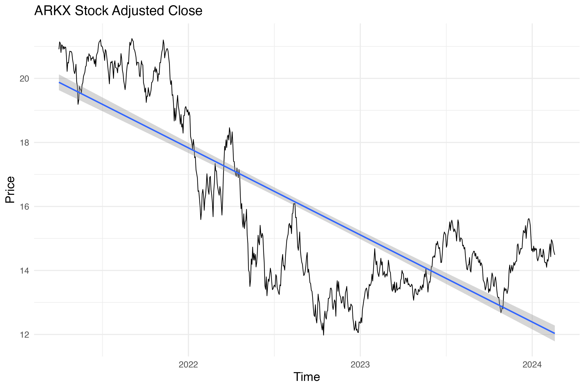
With reference to the class Lab 2, we will consider the following equations for the series based on whether seasonal variations over time:
| Type | Seasonal variations | Equation |
|---|---|---|
| Additive | Are relatively constant. | \(\rm Series = Trend + Seasonal + Random\) |
| Multiplicative | Increase or decrease with the level of the series. | \(\rm Series = Trend \times Seasonal \times Random\) |
Seas. 1: Mars Temperature. The series has shown a general direction of stability, with evident yearly seasonal patterns that reflect the planet’s four distinct seasons. Interestingly, over the past five years, data suggest a slight decrease in temperature, hinting that Mars has been trending warmer. This series is additive.
Seas. 2: Mars Pressure. When examining Mars’ Pressure, a downward trend is noticeable. Like its temperature, Mars exhibits clear yearly seasonal patterns corresponding to its four seasons. The pattern of Mars’s atmospheric pressure is also additive.
Financial 1: ARKX. The trajectory of ARKX has been on a downward slope. Its performance has been highly volatile, significantly influenced by the interest rate hike cycle that began in 2022. This cycle was particularly detrimental to technology stocks, affecting the overall valuation of ARKX. ARKX is a multiplicative series.
Financial 2: AVAV. Contrary to ARKX, AVAV has been trending upward overall despite experiencing high volatility. The same interest rate hike cycle that started in 2022, which negatively impacted technology stocks, applies here. However, AVAV has navigated these challenges more successfully. Also like ARKX, AVAV is a multiplicative series.
Treasury NASA Outlays. The outlays have been consistently moving upward, with a steady increase observed. A notable dip in 2019 stands out, but it is considered an anomaly and not representative of the overall upward trend, as it is a single month. The growth in NASA’s budget outlays is multiplicative.
Google Trends. In Google Trends for the Space Exploration term, there’s been an increasing general direction despite several fluctuations. The series is multiplicative.
Launches. The number of launches of weather satellites has shown an interesting pattern, decreasing from 1960 to 2010 but experiencing a resurgence recently. Despite multiple fluctuations, this rebound suggests a renewed interest or advancement in space exploration technologies. The series is multiplicative.
Satellites. The number of operational satellites has been clearly trending upward. Although there have been multiple fluctuations, the overall trajectory steadily increased, with a sharp rise observed in the past year. This indicates a significant expansion in satellite technology and deployment. The series is multiplicative.
4.2 Lag Plots

Seas. 1: Mars Temperature Monthly. An inverse correlation is particularly noticeable at a lag of six months, while a high positive correlation emerges at the twelve-month mark. Between these points, the patterns rotate around these mentioned correlations, showcasing the planet’s distinct seasonal changes. This cyclical pattern reflects the Martian climate’s balance, oscillating between warming and cooling as the Martian year progresses.
Seas. 2: Mars Pressure Monthly. Similarly, Mars’s pressure data exhibits seasonal characteristics but with a notable distinction. The clear seasonal pattern emerges predominantly at the twelve-month lag, with less clarity in the monthly correlations from months one through eleven. This highlights the unique environmental dynamics of the planet.
Financial 1: ARKX. The ARKX financial data demonstrates a common trait of financial instruments, where the correlation is strongest at a one-day lag and gradually weakens over time. This pattern indicates the short-term momentum often observed in financial markets, where recent past performance can strongly influence immediate future performance. However, this influence diminishes as the gap widens.
Financial 2: AVAV. The AVAV lag plots mirror the correlation pattern seen in ARKX, with a strong initial correlation that weakens progressively. This again underscores the principle that recent performance is a stronger predictor of the near future than of more distant periods.
Treasury NASA Outlays Monthly. For Treasury NASA Outlays, the data shows the strongest positive correlation at a twelve-month lag, yet overall, the correlations are not particularly strong. This indicates that while there is some seasonality to NASA’s budget outlays, it does not follow as predictable a pattern as some other seasonal data, suggesting that other factors play significant roles in budget fluctuations.
Google Trends Weekly. Google Trends data, observed weekly, displays a pattern similar to that of financial data, with a strong correlation at the first lag that significantly weakens after that. By the twelfth week, the correlation becomes nearly indiscernible. This highlights the fast-moving nature of internet search trends, where interests shift quickly.
Weather Satellite Launches Monthly. The correlation in monthly weather satellite launches is very weak across the board from months one through twelve. This indicates a lack of a strong seasonal or time-based pattern in the launching of weather satellites, suggesting that other factors, such as technological advancements or specific weather monitoring needs may more influence launches.
Operational Satellites Monthly. The monthly data on operational satellites shows a strong correlation at the first lag, similar to financial data, but this correlation weakens more slowly over time. This suggests a steadier and more predictable growth pattern or change in the number of operational satellites, following a more consistent trajectory.
4.3 Decomposition

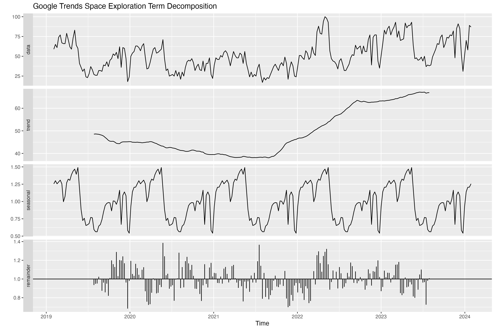
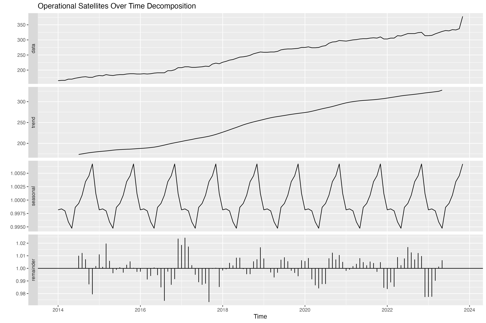
The decomposition plots illustrate the breakdown of different series into trends, seasonality, and remainders, which agree with the specifics and discussion already detailed in Part 1. The financial series, being technology stocks, stand out for their pronounced volatility, as highlighted by their remainders.
4.4 ACF and PACF Plots
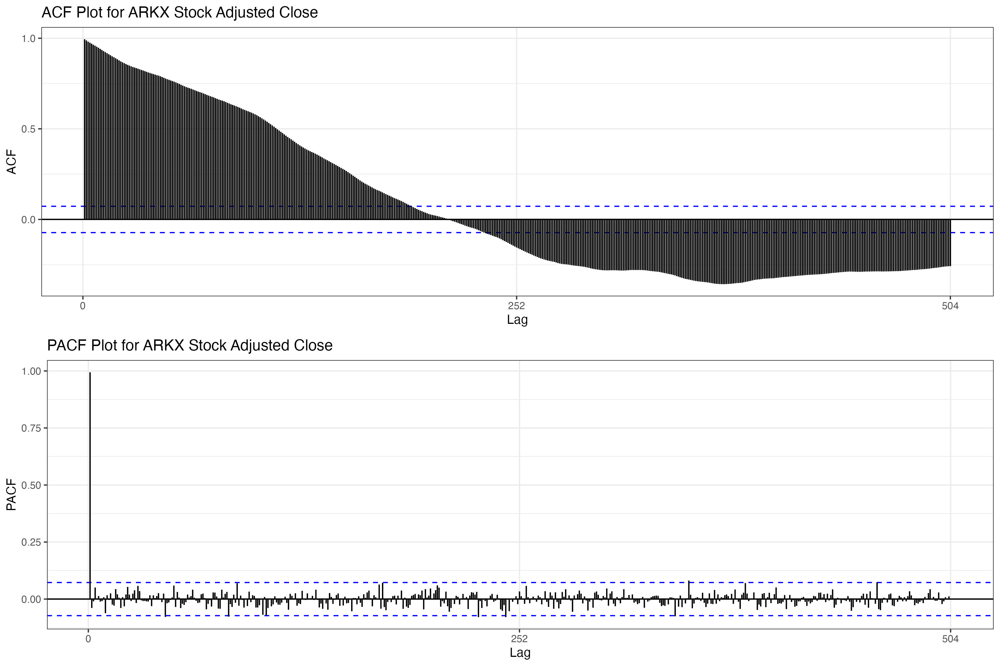
Seas. 1: Mars Temperature. As expected, due to the seasonal nature of temperature data, there are significant lags, particularly at 6-month and 12-month intervals. For ARIMA model parameters, p could be any value from 1 to 10, while q, based on the PACF, could be 1, 2, or 3. These plots indicate that the series is not stationary.
Seas. 2: Mars Pressure. Consistent with patterns observed in temperature data, Mars pressure shows significant seasonal correlations, primarily annually. According to the ACF, p could range from 1 to 7, while the PACF suggests that q could be 1, 2, 3, or 4. These observations imply that the series is not stationary.
Financial 1: ARKX. The ACF indicates a decreasing lag, typical for financial data, which could suggest a mean-reverting process. The PACF identifies the only significant lag at 0, indicating that the series may benefit from focusing on immediate past values for predictions.
Financial 2: AVAV. Exhibits a pattern similar to ARKX with a decreasing lag in the ACF and significant lag at 0 in the PACF, suggesting that the model parameters for AVAV might closely align with those determined for ARKX, focusing on immediate past values for predictions.
Treasury NASA Outlays. This series displays a distinct pattern, with significant correlations at every third lag (3, 6, 9, 12, and so on) in the ACF, indicating a quarterly seasonal pattern. The PACF shows significance at lags 3, 7, and 12, suggesting potential values for q. This pattern indicates a more complex seasonal model, necessitating differencing.
Google Trends. This data behaves similarly to the stock patterns observed in the ACF and PACF, hinting at short-term correlations that might be exploited in predictive modeling, much like financial time series data.
Launches. The ACF for this series shows autocorrelation across all 28 lags displayed, while the PACF indicates significance in the first seven lags. This extensive autocorrelation suggests a complex interplay of factors influencing launch frequencies, suggesting a detailed ARIMA model may be required to capture the underlying patterns accurately.
Satellites. The ACF for satellite data shows autocorrelation across all 24 lags displayed, suggesting a persistent pattern over time, while the PACF highlights significance only in the first lag. This indicates a potentially simpler ARIMA model could be applied, focusing on immediate past values for forecasting future data points.
4.5 Initial Dickey-Fuller Test
Table 4.1 shows the results of the Augmented Dickey-Fuller Test:
Table 4.1 presents the outcomes of the Augmented Dickey-Fuller Test. The series for which the test yields a p-value sufficiently low to reject the null hypothesis of non-stationarity include Average Ground Temperature on Mars, Atmospheric Pressure on Mars, Treasury NASA Outlays, and the Google Trends Space Exploration Term. However, these results do not align with previous findings from the ACF plots, suggesting that none of the series are stationary in their current form.
4.6 Detrending and First-Differencing
Drawing from the methodologies outlined in Lab 4 notes, we employ detrending and first differencing techniques on the series to attempt to attain stationarity. The subsequent panel displays a comparative visualization that includes the original data, the series after detrending, and the results of applying first-differencing.
Visually, the series appears to be moving towards stationarity, especially after first-differencing. We will verify this observation by examining their ACFs in the following section for confirmation.
4.7 Detrended and First-Differenced ACFs
The following panel shows the resulting ACFs:
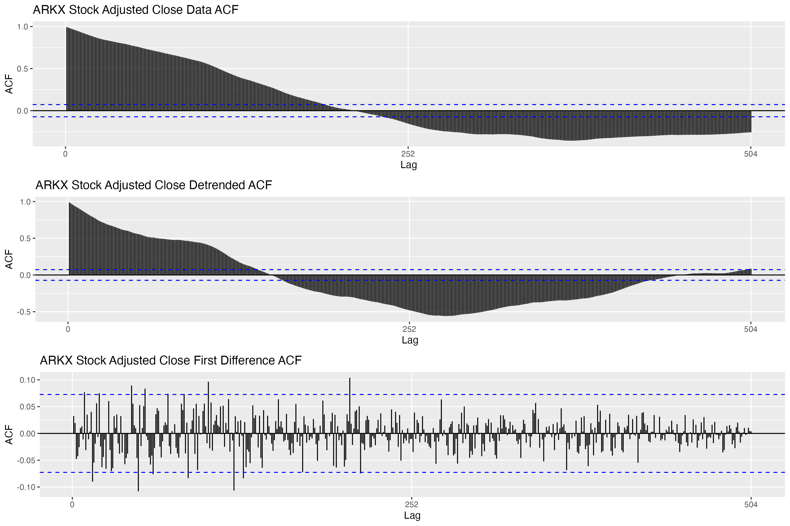

Several series demonstrate a transition to stationarity following first-differencing, with the effect being particularly marked in the financial series where detrending had minimal impact. Conversely, the seasonal series, especially Mars Pressure and the Satellites series, do not appear to exhibit stationarity. Consequently, we will investigate the potential of second differencing in the subsequent section.
4.8 First and Second Difference
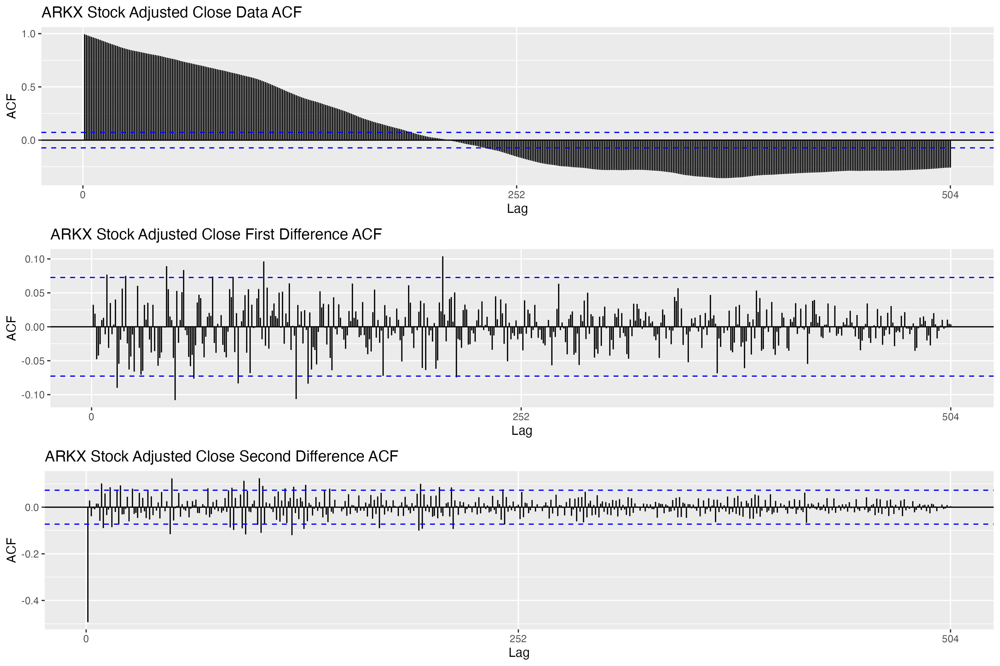

Now, the series that failed to attain stationarity through first differencing seem to have reached it upon applying second differencing. Following this, we will conduct the Dickey-Fuller test again on the adjusted datasets.
4.9 Dickey-Fuller Test on Adjusted Data
Table 4.2 shows the results of the Augmented Dickey-Fuller Test on the adjusted datasets.
| Data Series | Stationarity Method | Test Statistic | P-Value |
|---|---|---|---|
| Average Ground Temperature on Mars | First Difference | -5.5444 | 0.01 |
| Atmospheric Pressure on Mars | Second Difference | -3.8913 | 0.0196 |
| ARKX Stock Adjusted Close | First Difference | -8.5612 | 0.01 |
| AVAV Stock Adjusted Close | First Difference | -9.5899 | 0.01 |
| Treasury NASA Outlays | First Difference | -8.877 | 0.01 |
| Google Trends Space Exploration Term | First Difference | -7.1225 | 0.01 |
| Weather Satellite Launches | First Difference | -13.3759 | 0.01 |
| Operational Satellites Over Time | Second Difference | -4.6812 | 0.01 |
The various data series now seem to have achieved stationarity. For example, the Average Ground Temperature on Mars and the Atmospheric Pressure on Mars have become stationary after the first and second differencing, respectively, as evidenced by their test statistics and p-values (all below the 0.05 threshold), laying the groundwork for more dependable forecasting models. Financial series such as ARKX and AVAV stocks, along with Treasury NASA Outlays and the Google Trends Space Exploration Term, also show definitive stationarity after first differencing, as indicated by their significantly negative test statistics and p-values at the 0.01 level. Unlike the previous analysis using the Augmented Dickey-Fuller test, these findings are corroborated by the ACF plots, enhancing the credibility of the results.
4.10 SMA Smoothing
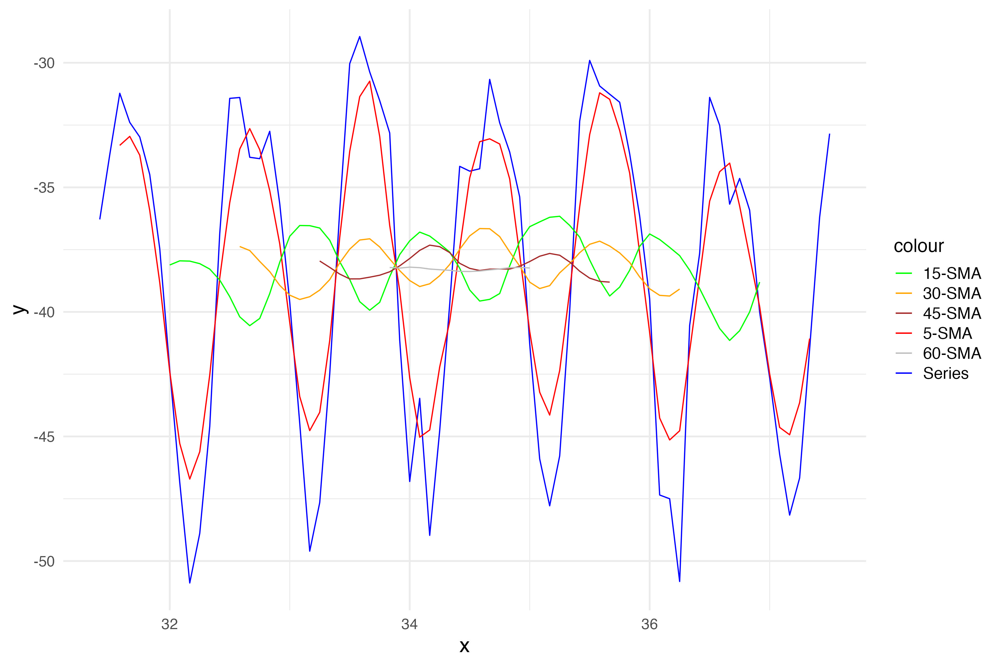
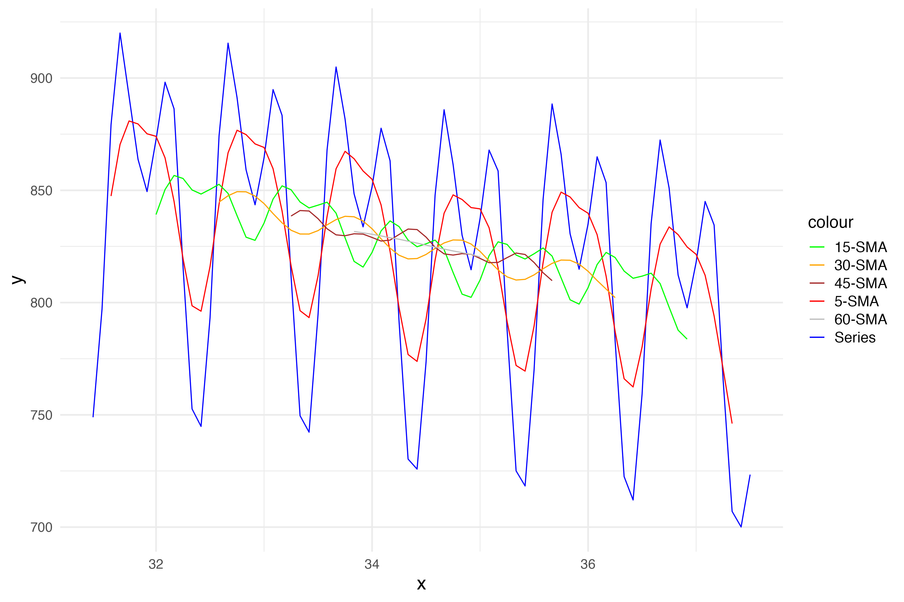
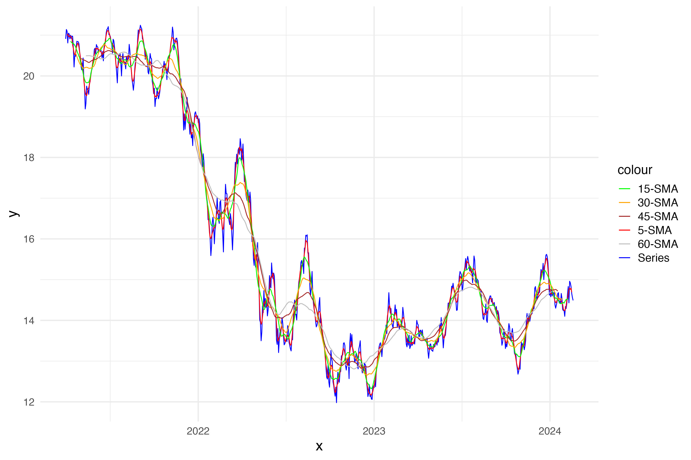
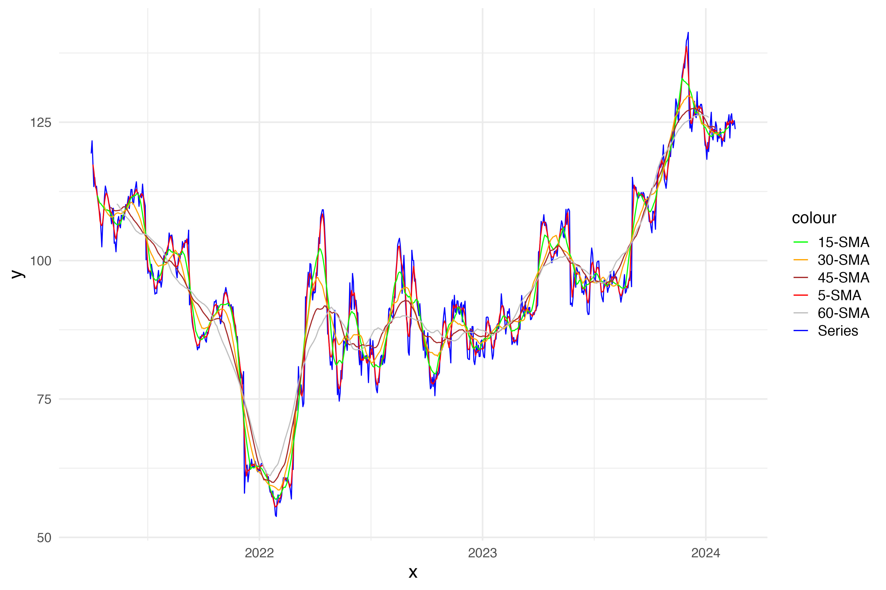
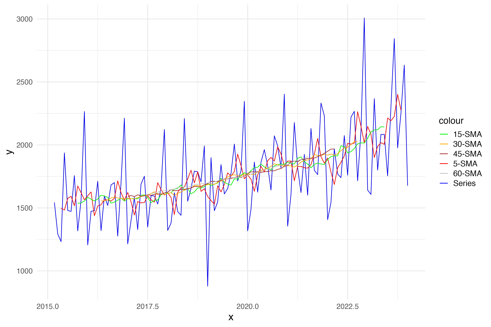
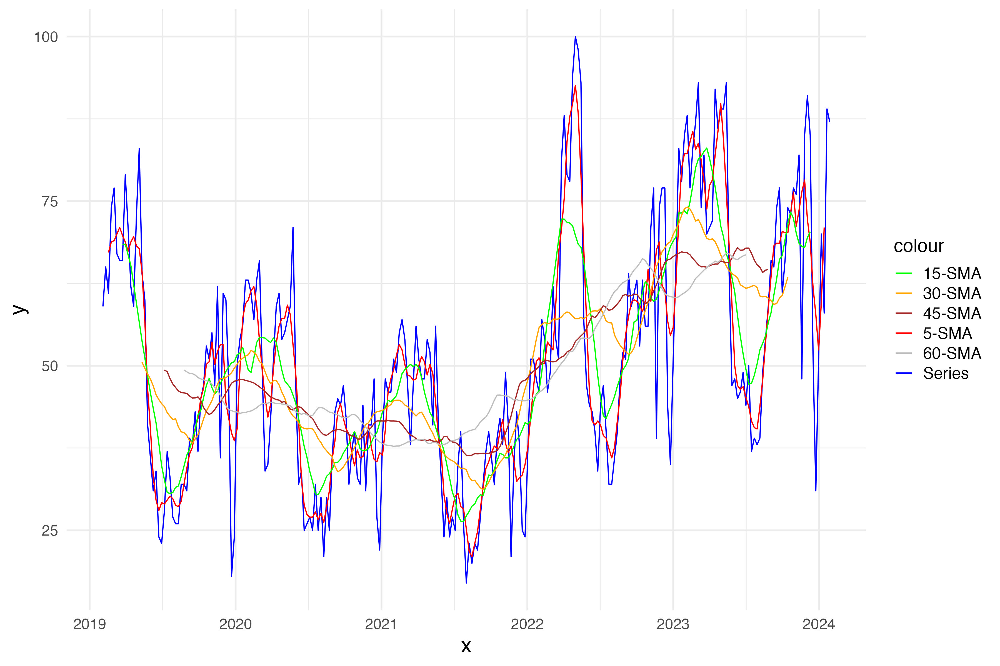
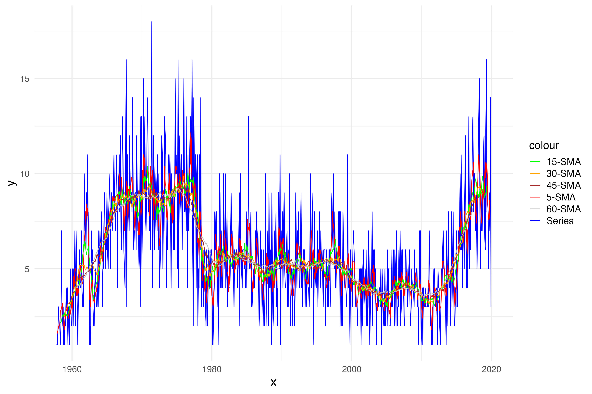
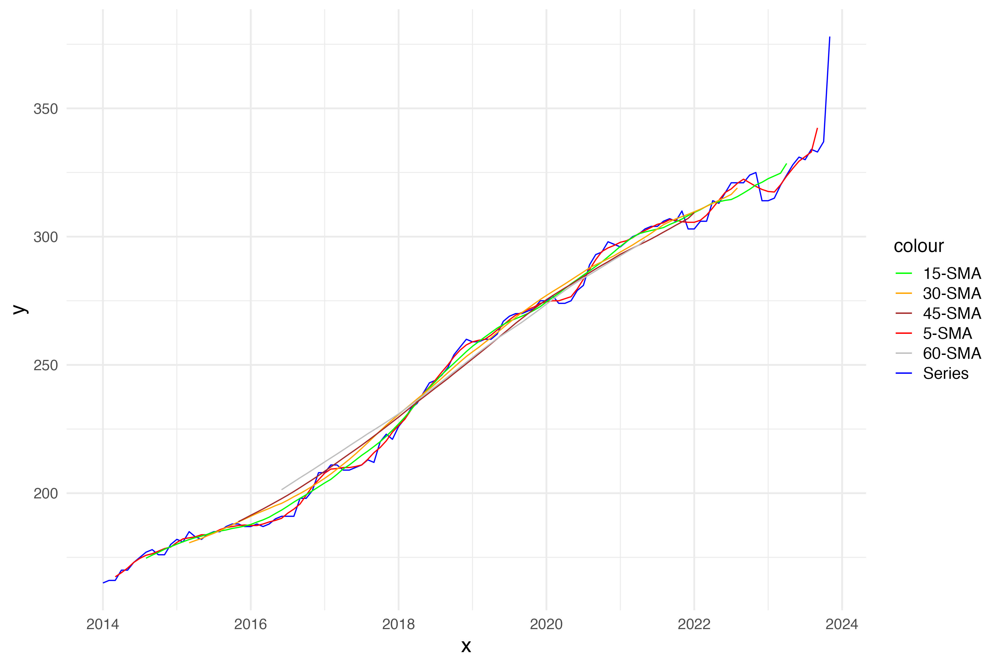
Additionally, inspired by the example from the EDA section provided, I have conducted an SMA analysis, incorporating moving averages over 5, 15, and 30 time steps. We observe that the 5-time step moving average for most series sufficiently smooths the data. In contrast, the longer SMAs tend to overly smooth the series, resulting in a loss of visible data trends.